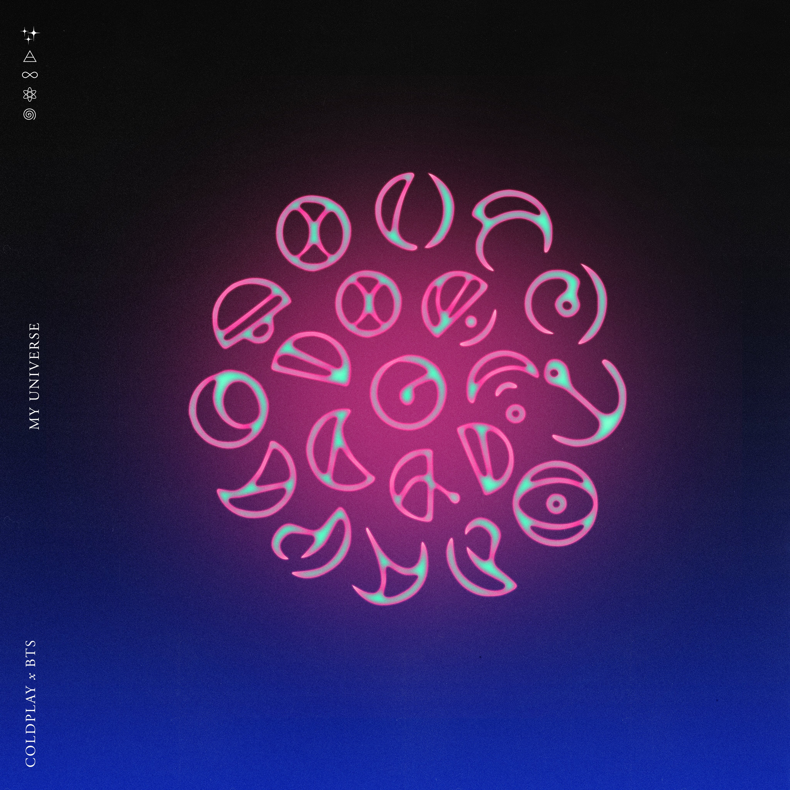

Coldplay x BTS - My Universe (Official Video) - Youtube

You (you), you are (you are) my universe
And I (I) just want (just want) to put you first
And you (you), you are (you are) my universe, and I
In the night, I lie and look up at you
When the morning comes, I watch you rise
There's a paradise they couldn't capture
That bright infinity inside your eyes
매일 밤 네게 날아가 (가)
꿈이란 것도 잊은 채
나 웃으며 너를 만나 (나)
Never-ending forever, baby
You (you), you are (you are) my universe
And I (I) just want (just want) to put you first
And you (you), you are (you are) my universe
And you make my world light up inside
어둠이 내겐 더 편했었지
길어진 그림자 속에서 (eyes)
And they said that we can't be together
Because, because we come from different sides
You (you), you are (you are) my universe
And I (I) just want (just want) to put you first
And you (you), you are (you are) my universe
And you make my world light up inside
My universe (doo-doo, doo-doo)
My universe (doo-doo, doo-doo)
My universe (doo-doo, doo-doo)
(You make my world)
You make my world light up inside
You make my world light up inside
나를 밝혀주는 건
너란 사랑으로 수 놓아진 별
내 우주의 넌
또 다른 세상을 만들어 주는 걸
너는 내 별이자 나의 우주니까
지금 이 시련도 결국엔 잠시니까
너는 언제까지나 지금처럼 밝게만 빛나줘
우리는 너를 따라 이 긴 밤을 수놓을 거야
너와 함께 날아가 (가)
When I'm without you, I'm crazy
자 어서 내 손을 잡아 (아)
We are made of each other, baby
You (you), you are (you are) my universe
And I (I) just want (just want) to put you first
And you (you), you are (you are) my universe
And you make my world light up inside
My universe (you, you are)
My universe (I just want)
My universe (you, you are my universe, and I)
My universe